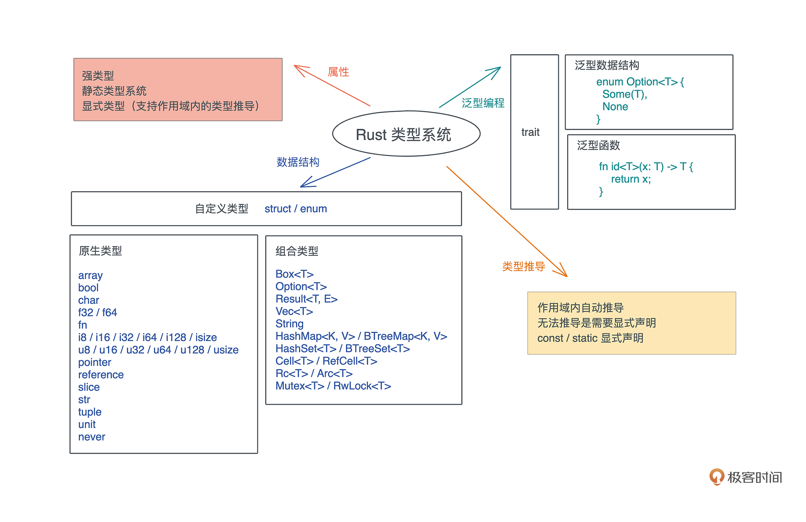

- 00 开篇词 让Rust成为你的下一门主力语言.md
- 01 内存：值放堆上还是放栈上，这是一个问题.md
- 02 串讲：编程开发中，那些你需要掌握的基本概念.md
- 03 初窥门径：从你的第一个Rust程序开始！.md
- 04 get hands dirty：来写个实用的CLI小工具.md
- 05 get hands dirty：做一个图片服务器有多难？.md
- 06 get hands dirty：SQL查询工具怎么一鱼多吃？.md
- 07 所有权：值的生杀大权到底在谁手上？.md
- 08 所有权：值的借用是如何工作的？.md
- 09 所有权：一个值可以有多个所有者么？.md
- 10 生命周期：你创建的值究竟能活多久？.md
- 11 内存管理：从创建到消亡，值都经历了什么？.md
- 12 类型系统：Rust的类型系统有什么特点？.md
- 13 类型系统：如何使用trait来定义接口？.md
- 14 类型系统：有哪些必须掌握的trait？.md
- 15 数据结构：这些浓眉大眼的结构竟然都是智能指针？.md
- 16 数据结构：Vec_T_、&[T]、Box_[T]_ ，你真的了解集合容器么？.md
- 17 数据结构：软件系统核心部件哈希表，内存如何布局？.md
- 18 错误处理：为什么Rust的错误处理与众不同？.md
- 19 闭包：FnOnce、FnMut和Fn，为什么有这么多类型？.md
- 20 4 Steps ：如何更好地阅读Rust源码？.md
- 21 阶段实操（1）：构建一个简单的KV server-基本流程.md
- 22 阶段实操（2）：构建一个简单的KV server-基本流程.md
- 23 类型系统：如何在实战中使用泛型编程？.md
- 24 类型系统：如何在实战中使用trait object？.md
- 25 类型系统：如何围绕trait来设计和架构系统？.md
- 26 阶段实操（3）：构建一个简单的KV server-高级trait技巧.md
- 27 生态系统：有哪些常有的Rust库可以为我所用？.md
- 28 网络开发（上）：如何使用Rust处理网络请求？.md
- 29 网络开发（下）：如何使用Rust处理网络请求？.md
- 30 Unsafe Rust：如何用C++的方式打开Rust？.md
- 31 FFI：Rust如何和你的语言架起沟通桥梁？.md
- 32 实操项目：使用PyO3开发Python3模块.md
- 33 并发处理（上）：从atomics到Channel，Rust都提供了什么工具？.md
- 34 并发处理（下）：从atomics到Channel，Rust都提供了什么工具？.md
- 35 实操项目：如何实现一个基本的MPSC channel？.md
- 36 阶段实操（4）：构建一个简单的KV server-网络处理.md
- 37 阶段实操（5）：构建一个简单的KV server-网络安全.md
- 38 异步处理：Future是什么？它和async_await是什么关系？.md
- 39 异步处理：async_await内部是怎么实现的？.md
- 40 异步处理：如何处理异步IO？.md
- 41 阶段实操（6）：构建一个简单的KV server-异步处理.md
- 42 阶段实操（7）：构建一个简单的KV server-如何做大的重构？.md
- 43 生产环境：真实世界下的一个Rust项目包含哪些要素？.md
- 44 数据处理：应用程序和数据如何打交道？.md
- 45 阶段实操（8）：构建一个简单的KV server-配置_测试_监控_CI_CD.md
- 46 软件架构：如何用Rust架构复杂系统？.md
- 加餐 Rust2021版次问世了！.md
- 加餐 代码即数据：为什么我们需要宏编程能力？.md
- 加餐 宏编程（上）：用最“笨”的方式撰写宏.md
- 加餐 宏编程（下）：用 syn_quote 优雅地构建宏.md
- 加餐 愚昧之巅：你的Rust学习常见问题汇总.md
- 加餐 期中测试：参考实现讲解.md
- 加餐 期中测试：来写一个简单的grep命令行.md
- 加餐 这个专栏你可以怎么学，以及Rust是否值得学？.md
- 大咖助场 开悟之坡（上）：Rust的现状、机遇与挑战.md
- 大咖助场 开悟之坡（下）：Rust的现状、机遇与挑战.md
- 特别策划 学习锦囊（一）：听听课代表们怎么说.md
- 特别策划 学习锦囊（三）：听听课代表们怎么说.md
- 特别策划 学习锦囊（二）：听听课代表们怎么说.md
- 用户故事 绝望之谷：改变从学习开始.md
- 用户故事 语言不仅是工具，还是思维方式.md
- 结束语 永续之原：Rust学习，如何持续精进？.md
12 类型系统：Rust的类型系统有什么特点？
你好，我是陈天。今天我们就开始类型系统的学习。
如果你用 C/Golang 这样不支持泛型的静态语言，或者用 Python/Ruby/JavaScript 这样的动态语言，这个部分可能是个难点，希望你做好要转换思维的准备；如果你用 C++/Java/Swift 等支持泛型的静态语言，可以比较一下 Rust 和它们的异同。
其实在之前的课程中，我们已经写了不少 Rust 代码，使用了各种各样的数据结构，相信你对 Rust 的类型系统已经有了一个非常粗浅的印象。那类型系统到底是什么？能用来干什么？什么时候用呢？今天就来一探究竟。
作为一门语言的核心要素，类型系统很大程度上塑造了语言的用户体验以及程序的安全性。为什么这么说？因为，在机器码的世界中，没有类型而言，指令仅仅和立即数或者内存打交道，内存中存放的数据都是字节流。
所以，可以说类型系统完全是一种工具，编译器在编译时对数据做静态检查，或者语言在运行时对数据做动态检查的时候，来保证某个操作处理的数据是开发者期望的数据类型。
现在你是不是能理解，为什么Rust类型系统对类型问题的检查格外严格（总是报错）。
类型系统基本概念与分类
在具体讲 Rust 的类型系统之前，我们先来澄清一些类型系统的概念，在基本理解上达成一致。
在[第二讲]提到过，类型，是对值的区分，它包含了值在内存中的长度、对齐以及值可以进行的操作等信息。
比如 u32 类型，它是一个无符号 32 位整数，长度是 4 个字节，对齐也是 4 个字节，取值范围在 0～4G 之间；u32 类型实现了加减乘除、大小比较等接口，所以可以做类似 1 + 2、i <= 3 这样的操作。
类型系统其实就是，对类型进行定义、检查和处理的系统。所以，按对类型的操作阶段不同，就有了不同的划分标准，也对应有不同分类，我们一个一个看。
按定义后类型是否可以隐式转换，可以分为强类型和弱类型。Rust 不同类型间不能自动转换，所以是强类型语言，而 C/C++/JavaScript 会自动转换，是弱类型语言。
按类型检查的时机，在编译时检查还是运行时检查，可以分为静态类型系统和动态类型系统。对于静态类型系统，还可以进一步分为显式静态和隐式静态，Rust/Java/Swift 等语言都是显式静态语言，而 Haskell 是隐式静态语言。
在类型系统中，多态是一个非常重要的思想，它是指在使用相同的接口时，不同类型的对象，会采用不同的实现。
对于动态类型系统，多态通过鸭子类型（duck typing）实现；而对于静态类型系统，多态可以通过参数多态（parametric polymorphism）、特设多态（adhoc polymorphism）和子类型多态（subtype polymorphism）实现。
- 参数多态是指，代码操作的类型是一个满足某些约束的参数，而非具体的类型。
- 特设多态是指同一种行为有多个不同实现的多态。比如加法，可以 1+1，也可以是 “abc” + “cde”、matrix1 + matrix2、甚至 matrix1 + vector1。在面向对象编程语言中，特设多态一般指函数的重载。
- 子类型多态是指，在运行时，子类型可以被当成父类型使用。
在 Rust 中，参数多态通过泛型来支持、特设多态通过 trait 来支持、子类型多态可以用 trait object 来支持，我们待会讲参数多态，下节课再详细讲另外两个。
你可以看下图来更好地厘清这些概念之间的关系：
Rust 类型系统
好，掌握了类型系统的基本概念和分类，再看 Rust 的类型系统。
按刚才不同阶段的分类，在定义时， Rust 不允许类型的隐式转换，也就是说，Rust 是强类型语言；同时在检查时，Rust 使用了静态类型系统，在编译期保证类型的正确。强类型加静态类型，使得 Rust 是一门类型安全的语言。
其实说到“类型安全”，我们经常听到这个术语，但是你真的清楚它是什么涵义吗？
从内存的角度看，类型安全是指代码，只能按照被允许的方法，访问它被授权访问的内存。
以一个长度为 4，存放 u64 数据的数组为例，访问这个数组的代码，只能在这个数组的起始地址到数组的结束地址之间这片 32 个字节的内存中访问，而且访问是按照 8 字节来对齐的，另外，数组中的每个元素，只能做 u64 类型允许的操作。对此，编译器会对代码进行严格检查来保证这个行为。我们看下图：
所以 C/C++ 这样，定义后数据可以隐式转换类型的弱类型语言，不是内存安全的，而 Rust 这样的强类型语言，是类型安全的，不会出现开发者不小心引入了一个隐式转换，导致读取不正确的数据，甚至内存访问越界的问题。
在此基础上，Rust 还进一步对内存的访问进行了读/写分开的授权。所以，Rust 下的内存安全更严格：代码只能按照被允许的方法和被允许的权限，访问它被授权访问的内存。
为了做到这么严格的类型安全，Rust 中除了 let/fn/static/const 这些定义性语句外，都是表达式，而一切表达式都有类型，所以可以说在 Rust 中，类型无处不在。
你也许会有疑问，那类似这样的代码，它的类型是什么？
if has_work {
do_something();
}
在Rust中，对于一个作用域，无论是 if/else/for 循环，还是函数，最后一个表达式的返回值就是作用域的返回值，如果表达式或者函数不返回任何值，那么它返回一个 unit() 。unit 是只有一个值的类型，它的值和类型都是 () 。
像上面这个 if 块，它的类型和返回值是() ，所以当它被放在一个没有返回值的函数中，如下所示：
fn work(has_work: bool) {
if has_work {
do_something();
}
}
Rust 类型无处不在这个逻辑还是自洽的。
unit 的应用非常广泛，除了作为返回值，它还被大量使用在数据结构中，比如 Result<(), Error> 表示返回的错误类型中，我们只关心错误，不关心成功的值，再比如 HashSet 实际上是 HashMap<K, ()> 的一个类型别名。
到这里简单总结一下，我们了解到 Rust 是强类型/静态类型语言，并且在代码中，类型无处不在。
作为静态类型语言，Rust 提供了大量的数据类型，但是在使用的过程中，进行类型标注是很费劲的，所以Rust 类型系统贴心地提供了类型推导。
而对比动态类型系统，静态类型系统还比较麻烦的是，同一个算法，对应输入的数据结构不同，需要有不同的实现，哪怕这些实现没有什么逻辑上的差异。对此，Rust 给出的答案是泛型（参数多态）。
所以接下来，我们先看 Rust 有哪些基本的数据类型，然后了解一下类型推导是如何完成的，最后看 Rust 是如何支持泛型的。
数据类型
在第二讲中介绍了原生类型和组合类型的定义，今天就详细介绍一下这两种类型在 Rust 中的设计。
Rust 的原生类型包括字符、整数、浮点数、布尔值、数组（array）、元组（tuple）、切片（slice）、指针、引用、函数等，见下表（参考链接）：-

在原生类型的基础上，Rust 标准库还支持非常丰富的组合类型，看看已经遇到的：-

之后我们不断会遇到新的数据类型，推荐你有意识地记录一下，相信到最后，你的这个列表会积累得很长很长。
另外在 Rust 已有数据类型的基础上，你也可以使用结构体（struct）和标签联合（enum）定义自己的组合类型，之前已经有过详细的介绍，这里就不再赘述，你可以看下图回顾：
类型推导
作为静态类型系统的语言，虽然能够在编译期保证类型的安全，但一个很大的不便是，代码撰写起来很繁杂，到处都要进行类型的声明。尤其刚刚讲了 Rust 的数据类型相当多，所以，为了减轻开发者的负担，Rust 支持局部的类型推导。
在一个作用域之内，Rust 可以根据变量使用的上下文，推导出变量的类型，这样我们就不需要显式地进行类型标注了。比如这段代码，创建一个 BTreeMap 后，往这个 map 里添加了 key 为 “hello”、value 为 “world” 的值：
use std::collections::BTreeMap;
fn main() {
let mut map = BTreeMap::new();
map.insert("hello", "world");
println!("map: {:?}", map);
}
此时， Rust 编译器可以从上下文中推导出， BTreeMap<K, V> 的类型 K 和 V 都是字符串引用 &str，所以这段代码可以编译通过，然而，如果你把第 5 行这个作用域内的 insert 语句注释去掉，Rust 编译器就会报错：“cannot infer type for type parameter K”。
很明显，Rust 编译器需要足够的上下文来进行类型推导，所以有些情况下，编译器无法推导出合适的类型，比如下面的代码尝试把一个列表中的偶数过滤出来，生成一个新的列表（代码）：
fn main() {
let numbers = vec![1, 2, 3, 4, 5, 6, 7, 8, 9, 10];
let even_numbers = numbers
.into_iter()
.filter(|n| n % 2 == 0)
.collect();
println!("{:?}", even_numbers);
}
collect 是 Iterator trait 的方法，它把一个 iterator 转换成一个集合。因为很多集合类型，如 Veccollect 究竟要返回什么类型，编译器是无法从上下文中推断的。
所以这段代码无法编译，它会给出如下错误：“consider giving even_numbers a type”。
这种情况，就无法依赖类型推导来简化代码了，必须让 even_numbers 有一个明确的类型。所以，我们可以使用类型声明（代码）：
fn main() {
let numbers = vec![1, 2, 3, 4, 5, 6, 7, 8, 9, 10];
let even_numbers: Vec<_> = numbers
.into_iter()
.filter(|n| n % 2 == 0)
.collect();
println!("{:?}", even_numbers);
}
注意这里编译器只是无法推断出集合类型，但集合类型内部元素的类型，还是可以根据上下文得出，所以我们可以简写成 Vec<_> 。
除了给变量一个显式的类型外，我们也可以让 collect 返回一个明确的类型（代码）：
fn main() {
let numbers = vec![1, 2, 3, 4, 5, 6, 7, 8, 9, 10];
let even_numbers = numbers
.into_iter()
.filter(|n| n % 2 == 0)
.collect::<Vec<_>>();
println!("{:?}", even_numbers);
}
你可以看到，在泛型函数后使用 ::<T> 来强制使用类型 T，这种写法被称为 turbofish。我们再看一个对 IP 地址和端口转换的例子（代码）：
use std::net::SocketAddr;
fn main() {
let addr = "127.0.0.1:8080".parse::<SocketAddr>().unwrap();
println!("addr: {:?}, port: {:?}", addr.ip(), addr.port());
}
turbofish 的写法在很多场景都有优势，因为在某些上下文中，你想直接把一个表达式传递给一个函数或者当成一个作用域的返回值，比如：
match data {
Some(s) => v.parse::<User>()?,
_ => return Err(...),
}
如果 User 类型在上下文无法被推导出来，又没有 turbofish 的写法，我们就不得不先给一个局部变量赋值时声明类型，然后再返回，这样代码就变得冗余了。
有些情况下，即使上下文中含有类型的信息，也需要开发者为变量提供类型，比如常量和静态变量的定义。看一个例子（代码）：
const PI: f64 = 3.1415926;
static E: f32 = 2.71828;
fn main() {
const V: u32 = 10;
static V1: &str = "hello";
println!("PI: {}, E: {}, V {}, V1: {}", PI, E, V, V1);
}
这可能是因为 const/static 主要用于定义全局变量，它们可以在不同的上下文中使用，所以为了代码的可读性，需要明确的类型声明。
用泛型实现参数多态
类型的定义和使用就讲到这里，刚才说过 Rust 通过泛型，来避免开发者为不同的类型提供不同的算法。一门静态类型语言不支持泛型，用起来是很痛苦的，比如我们熟悉的 Vec
所以我们现在来看看 Rust 对泛型的支持如何。今天先讲参数多态，它包括泛型数据结构和泛型函数，下一讲介绍特设多态和子类型多态。
泛型数据结构
Rust 对数据结构的泛型，或者说参数化类型，有着完整的支持。
在过去的学习中，其实你已经接触到了很多带有参数的数据类型，这些参数化类型可以极大地增强代码的复用性，减少代码的冗余。几乎所有支持静态类型系统的现代编程语言，都支持参数化类型，不过 Golang 目前是个例外。
我们从一个最简单的泛型例子 Option
enum Option<T> {
Some(T),
None,
}
这个数据结构你应该很熟悉了，T 代表任意类型，当 Option 有值时是 Some(T)，否则是 None。
在定义刚才这个泛型数据结构的时候，你有没有这样的感觉，有点像在定义函数：
- 函数，是把重复代码中的参数抽取出来，使其更加通用，调用函数的时候，根据参数的不同，我们得到不同的结果；
- 而泛型，是把重复数据结构中的参数抽取出来，在使用泛型类型时，根据不同的参数，我们会得到不同的具体类型。
再来看一个复杂一点的泛型结构 Vec
pub struct Vec<T, A: Allocator = Global> {
buf: RawVec<T, A>,
len: usize,
}
pub struct RawVec<T, A: Allocator = Global> {
ptr: Unique<T>,
cap: usize,
alloc: A,
}
Vec 有两个参数，一个是 T，是列表里的每个数据的类型，另一个是 A，它有进一步的限制 A: Allocator ，也就是说 A 需要满足 Allocator trait。
A 这个参数有默认值 Global，它是 Rust 默认的全局分配器，这也是为什么 Vec
在讲生命周期标注的时候，我们讲过，数据类型内部如果有借用的数据，需要显式地标注生命周期。其实在 Rust 里，生命周期标注也是泛型的一部分，一个生命周期 'a 代表任意的生命周期，和 T 代表任意类型是一样的。
来看一个枚举类型 Cow
pub enum Cow<'a, B: ?Sized + 'a> where B: ToOwned,
{
// 借用的数据
Borrowed(&'a B),
// 拥有的数据
Owned(<B as ToOwned>::Owned),
}
Cow（Clone-on-Write）是Rust中一个很有意思且很重要的数据结构。它就像 Option 一样，在返回数据的时候，提供了一种可能：要么返回一个借用的数据（只读），要么返回一个拥有所有权的数据（可写）。
这里你搞清楚泛型参数的约束就可以了，未来还会遇到 Cow，届时再详细讲它的用法。
对于拥有所有权的数据 B ，第一个是生命周期约束。这里 B 的生命周期是 'a，所以 B 需要满足 'a，这里和泛型约束一样，也是用 B: 'a 来表示。当 Cow 内部的类型 B 生命周期为 'a 时，Cow 自己的生命周期也是 'a。
B 还有两个约束：?Sized 和 “where B: ToOwned”。
在表述泛型参数的约束时，Rust 允许两种方式，一种类似函数参数的类型声明，用 “:” 来表明约束，多个约束之间用 + 来表示；另一种是使用 where 子句，在定义的结尾来表明参数的约束。两种方法都可以，且可以共存。
?Sized 是一种特殊的约束写法，? 代表可以放松问号之后的约束。由于 Rust 默认的泛型参数都需要是 Sized，也就是固定大小的类型，所以这里 ?Sized 代表用可变大小的类型。
ToOwned 是一个 trait，它可以把借用的数据克隆出一个拥有所有权的数据。
所以这里对 B 的三个约束分别是：
- 生命周期 'a
- 长度可变 ?Sized
- 符合 ToOwned trait
最后我解释一下 Cow 这个 enum 里 <B as ToOwned>::Owned 的含义：它对 B 做了一个强制类型转换，转成 ToOwned trait，然后访问 ToOwned trait 内部的 Owned 类型。
因为在 Rust 里，子类型可以强制转换成父类型，B 可以用 ToOwned 约束，所以它是 ToOwned trait 的子类型，因而 B 可以安全地强制转换成 ToOwned。这里 B as ToOwned 是成立的。
上面 Vec 和 Cow 的例子中，泛型参数的约束都发生在开头 struct 或者 enum 的定义中，其实，很多时候，我们也可以在不同的实现下逐步添加约束，比如下面这个例子（代码）：
use std::fs::File;
use std::io::{BufReader, Read, Result};
// 定义一个带有泛型参数 R 的 reader，此处我们不限制 R
struct MyReader<R> {
reader: R,
buf: String,
}
// 实现 new 函数时，我们不需要限制 R
impl<R> MyReader<R> {
pub fn new(reader: R) -> Self {
Self {
reader,
buf: String::with_capacity(1024),
}
}
}
// 定义 process 时，我们需要用到 R 的方法，此时我们限制 R 必须实现 Read trait
impl<R> MyReader<R>
where
R: Read,
{
pub fn process(&mut self) -> Result<usize> {
self.reader.read_to_string(&mut self.buf)
}
}
fn main() {
// 在 windows 下，你需要换个文件读取，否则会出错
let f = File::open("/etc/hosts").unwrap();
let mut reader = MyReader::new(BufReader::new(f));
let size = reader.process().unwrap();
println!("total size read: {}", size);
}
逐步添加约束，可以让约束只出现在它不得不出现的地方，这样代码的灵活性最大。
泛型函数
了解了泛型数据结构是如何定义和使用的，再来看泛型函数，它们的思想类似。在声明一个函数的时候，我们还可以不指定具体的参数或返回值的类型，而是由泛型参数来代替。对函数而言，这是更高阶的抽象。
一个简单的例子（代码）：
fn id<T>(x: T) -> T {
return x;
}
fn main() {
let int = id(10);
let string = id("Tyr");
println!("{}, {}", int, string);
}
这里，id() 是一个泛型函数，它接受一个带有泛型类型的参数，返回一个泛型类型。
对于泛型函数，Rust 会进行单态化（Monomorphization）处理，也就是在编译时，把所有用到的泛型函数的泛型参数展开，生成若干个函数。所以，刚才的 id() 编译后会得到一个处理后的多个版本（代码）：
fn id_i32(x: i32) -> i32 {
return x;
}
fn id_str(x: &str) -> &str {
return x;
}
fn main() {
let int = id_i32(42);
let string = id_str("Tyr");
println!("{}, {}", int, string);
}
单态化的好处是，泛型函数的调用是静态分派（static dispatch），在编译时就一一对应，既保有多态的灵活性，又没有任何效率的损失，和普通函数调用一样高效。
但是对比刚才编译会展开的代码也能很清楚看出来，单态化有很明显的坏处，就是编译速度很慢，一个泛型函数，编译器需要找到所有用到的不同类型，一个个编译，所以 Rust 编译代码的速度总被人吐槽，这和单态化脱不开干系（另一个重要因素是宏）。
同时，这样编出来的二进制会比较大，因为泛型函数的二进制代码实际存在 N 份。
还有一个可能你不怎么注意的问题：因为单态化，代码以二进制分发会损失泛型的信息。如果我写了一个库，提供了如上的 id() 函数，使用这个库的开发者如果拿到的是二进制，那么这个二进制中必须带有原始的泛型函数，才能正确调用。但单态化之后，原本的泛型信息就被丢弃了。
小结
今天我们介绍了类型系统的一些基本概念以及 Rust 的类型系统。
用一张图描述了 Rust 类型系统的主要特征，包括其属性、数据结构、类型推导和泛型编程：- 
按类型定义、检查以及检查时能否被推导出来，Rust 是强类型+静态类型+显式类型。
因为是静态类型，那么在写代码时常用的类型你需要牢牢掌握。为了避免静态类型要到处做类型标注的繁琐，Rust提供了类型推导。
在少数情况下，Rust 无法通过上下文进行类型推导，我们需要为变量显式地标注类型，或者通过 turbofish 语法，为泛型函数提供一个确定的类型。有个例外是在 Rust 代码中定义常量或者静态变量时，即使上下文中类型信息非常明确，也需要显式地进行类型标注。
在参数多态上，Rust 提供有完善支持的泛型。你可以使用和定义泛型数据结构，在声明一个函数的时候，也可以不指定具体的参数或返回值的类型，而是由泛型参数来代替，也就是泛型函数。它们的思想其实差不多，因为当数据结构可以泛型时，函数自然也就需要支持泛型。
另外，生命周期标注其实也是泛型的一部分，而对于泛型函数，在编译时会被单态化，导致编译速度慢。
下一讲我们接着介绍特设多态和子类型多态……
思考题
下面这段代码为什么不能编译通过？你可以修改它使其正常工作么？
use std::io::{BufWriter, Write};
use std::net::TcpStream;
#[derive(Debug)]
struct MyWriter<W> {
writer: W,
}
impl<W: Write> MyWriter<W> {
pub fn new(addr: &str) -> Self {
let stream = TcpStream::connect("127.0.0.1:8080").unwrap();
Self {
writer: BufWriter::new(stream),
}
}
pub fn write(&mut self, buf: &str) -> std::io::Result<()> {
self.writer.write_all(buf.as_bytes())
}
}
fn main() {
let writer = MyWriter::new("127.0.0.1:8080");
writer.write("hello world!");
}
欢迎在留言区答题交流，你已经完成Rust学习的第12次打卡，我们下节课见！
参考资料
1.绝大多数支持静态类型系统的语言同时也会支持动态类型系统，因为单纯靠静态类型无法支持运行时的类型转换，比如里氏替换原则。
里氏替换原则简单说就是子类型对象可以在程序中代替父类型对象。它是运行时多态的基础。所以如果要支持运行时多态，以及动态分派、后期绑定、反射等功能，编程语言需要支持动态类型系统。
2.动态类型系统的缺点是没有编译期的类型检查，程序不够安全，只能通过大量的单元测试来保证代码的健壮性。但使用动态类型系统的程序容易撰写，不用花费大量的时间来抠数据结构或者函数的类型。
所以一般用在脚本语言中，如 JavaScript/Python/Elixir。不过因为这些脚本语言越来越被用在大型项目中，所以它们也都有各自的类型标注的方法，来提供编译时的额外检查。
3.为了语言的简单易懂，编译高效，Golang 在设计之初没有支持泛型，但未来在 Golang 2 中也许会添加泛型。
4.当我们在堆上分配内存的时候，我们通过分配器来进行内存的分配，以及管理已分配的内存，包括增大（grow）、缩小（shrink）等。在处理某些情况下，默认的分配器也许不够高效，我们可以使用 jemalloc 来分配内存。
5.如果你对各个语言是如何实现和处理泛型比较感兴趣的话，可以参考下图（来源）：
© 2019 - 2023 Liangliang Lee. Powered by Vert.x and hexo-theme-book.